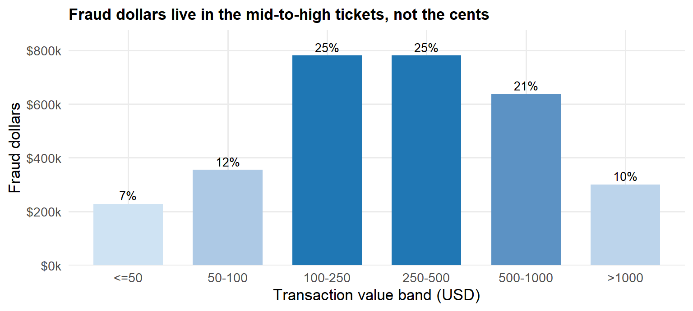
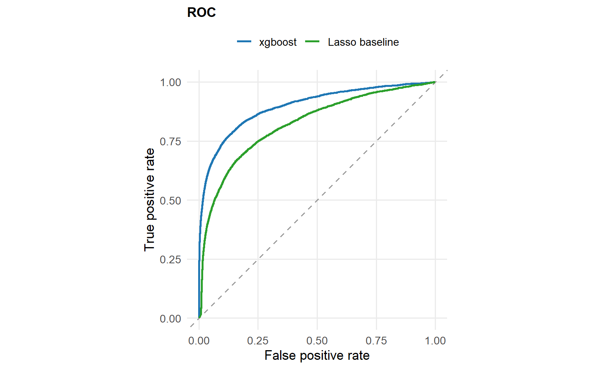
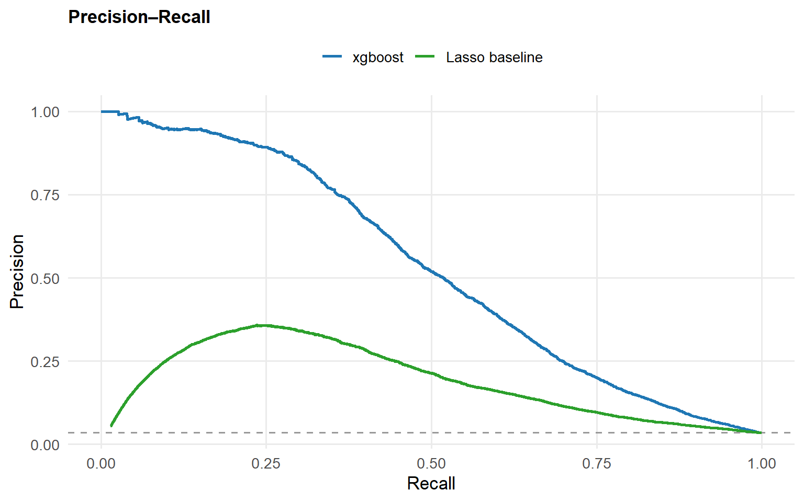
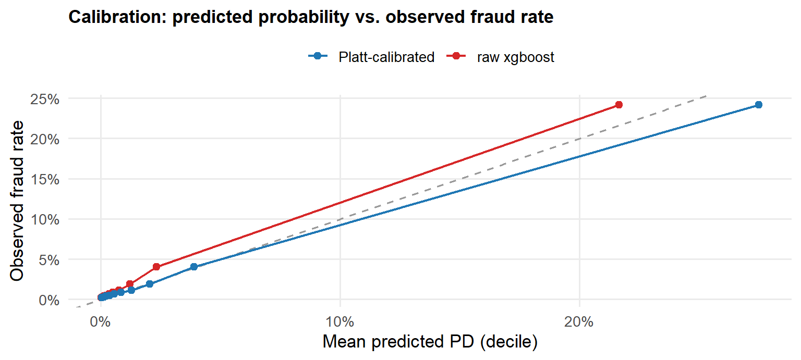
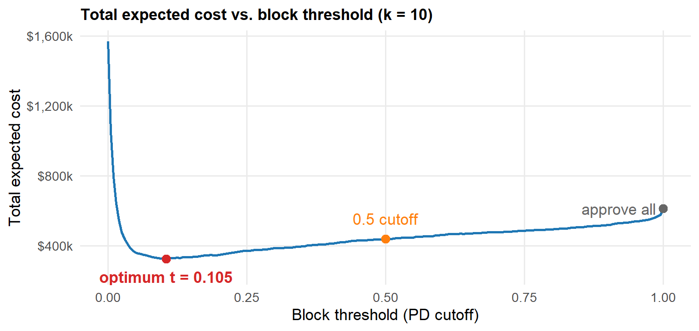
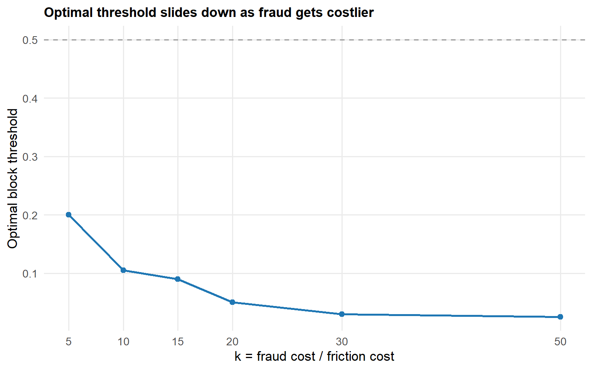
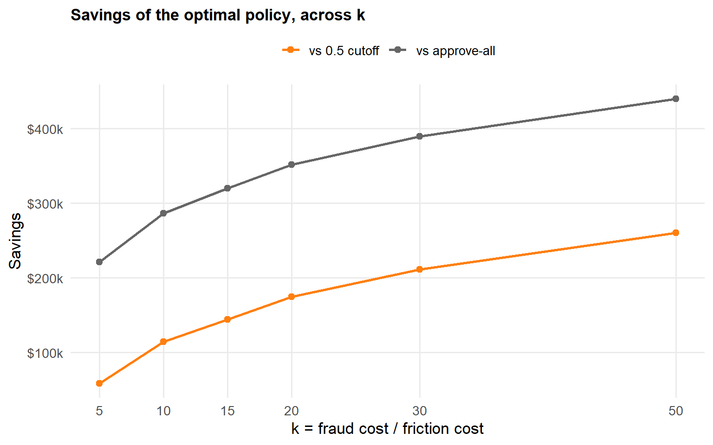

Fraud Block Threshold: A Risk Decision, Not an AUC
Where to set the block threshold to minimize total cost — fraud loss vs. customer friction
This is a payments-fraud problem framed as a cost decision, not a leaderboard score. A model that ranks fraud well (AUC) still has to answer the operational question: at what probability do we actually block a transaction? That cutoff trades fraud loss against the friction of declining good customers — an asymmetric, dollar-denominated choice. The arc below is three questions: how much is at stake (P1), why the threshold is economic (P2), and where to put it (P3).
Data: IEEE-CIS / Vesta card-not-present transactions, ~6 months, USD.
isFraudis a chargeback-based label. All P2/P3 figures are recomputed live from the committedscored.parquet; P1 reads a committed summary of the raw table.
The figure that matters
Over the ~6-month window there are 590,540 transactions worth $79,738,949, of which $3,083,845 is fraud. The number that should drive the project is that $3,083,845 of exposure — not the fraud rate.
And the rate understates it. Fraud is 3.50% of transactions by count but 3.87% by dollars, because the average fraudulent ticket ($149) runs larger than the average legitimate one ($135). Counting transactions, the instinctive default, quietly underweights the problem.
The loss is concentrated in value, not in volume: 88.4% of fraud dollars come from tickets above the median ($69); the $100–1000 bands alone carry 71% of it, while sub-$50 tickets are only 7.4%. That is hard evidence — not aesthetics — that the policy should be value-weighted: expected loss is PD × exposure.
| Product | Transactions | Fraud rate (count) | Fraud dollars | Share of fraud $ |
|---|---|---|---|---|
| W | 439,670 | 2.0% | $2,054,325 | 66.6% |
| C | 68,519 | 11.7% | $391,421 | 12.7% |
| R | 37,699 | 3.8% | $348,050 | 11.3% |
| H | 33,024 | 4.8% | $246,632 | 8.0% |
| S | 11,628 | 5.9% | $43,416 | 1.4% |
Risk is not uniform, and dollars ≠ rate. Product W is 67% of the fraud dollars on a low 2.0% rate (huge volume), while product C runs a 11.7% rate — several times the average — on far less volume. A single off-the-shelf “0.5 for everyone” rule is already suboptimal here. That is the hook into P2.
Why the threshold is an economic decision
A classifier orders transactions by risk; it does not choose where to cut. Picking the cut is where the asymmetry enters: a false negative (approve a fraud) costs the transaction value; a false positive (block a good customer) costs margin, friction, and churn. Those are not the same dollar, so the right cutoff is not 0.5.
The model is the means, not the headline. What follows is the discrimination it reaches on the untouched test window — a gradient-boosted model against a sparse Lasso baseline kept as an interpretable contrast — but the methodology that produces an honest, calibratable score matters more than the headline AUC.
Models and tuning
Validation design — a 4-way temporal split. Fraud is non-stationary, so a random cross-validation fold would train on the future and leak it into the past (Kaufman et al. 2012). Instead the ~6 months are cut by time into four contiguous windows: train (days 1–120) fits the model; select (120–135) drives early stopping and hyperparameter choice; calibrate (135–141) is touched only by the calibrator and never seen by model selection; test (141–183) is the untouched final evaluation. Isolating the calibration window is what keeps the probabilities honest — no window does double duty.
xgboost. Gradient-boosted decision trees (Chen and Guestrin 2016) with native categorical handling (high-cardinality factors lumped to the top 100 levels + __other__, missingness preserved as signal). Tuning is a random search of 16 configurations seeded for reproducibility, each trained with early stopping (40 rounds, ≤ 800 trees) on the select window and scored by PR-AUC; the best configuration is kept. Crucially, no class rebalancing (no scale_pos_weight, no SMOTE): up-weighting the minority inflates predicted probabilities and breaks the calibration the cost layer depends on (Elkan 2001). The search space:
| Hyperparameter | Search space |
|---|---|
max_depth |
4, 5, 6, 7, 8 |
eta (learning rate) |
0.02, 0.03, 0.05, 0.08 |
min_child_weight |
1, 3, 5, 10 |
reg_lambda (L2) |
0.5, 1, 2, 5 |
reg_alpha (L1) |
0, 0.5, 1 |
subsample |
0.7, 0.8, 0.9 |
colsample_bytree |
0.6, 0.8, 1.0 |
Lasso baseline. An L1-penalized logistic regression (Tibshirani 1996) fit along the full regularization path by coordinate descent (Friedman, Hastie, and Tibshirani 2010). The penalty lambda is chosen on the select window by ROC-AUC, not PR-AUC: at the heavily-regularized end of the path the predictions are near-constant, where PR-AUC degenerates toward the base rate and would spuriously select the null model, while ROC-AUC stays well-behaved. Missingness is handled explicitly (it is signal here): numeric features get a train-median imputation plus a missing-indicator column; categoricals get an explicit __NA__ level before one-hot encoding — every transform learned on train only and applied forward. The sparse coefficient vector is the point: a readable floor the boosted model must beat.
A third honesty note belongs here: picking lambda by argmax of the select ROC-AUC is the weakest link in this baseline. Because select (days 120–135) sits right after train, its AUC keeps climbing as the penalty falls — the maximum is pinned to the low-lambda boundary of the path rather than a genuine interior optimum. But select and test (days 141–183, further into the future) disagree: the lighter-penalty fit that wins select generalizes slightly worse out-of-sample than a more-regularized one — a textbook signature of temporal overfit. A one-standard-error (parsimony) rule (Hastie, Tibshirani, and Friedman 2009), or scoring the path across several sequential validation windows instead of one, would pull the choice toward the sparser, more robust end and is the more defensible design. The effect is small here (a few thousandths of test ROC/PR on a model that is deliberately the floor, not the headline), so the committed run is kept as-is; the more careful selection rule is noted as the obvious next refinement.
Calibration. A ranking score is necessary but not sufficient — to sum dollars in P3 the score must read as a probability. The xgboost output is Platt-scaled (Platt 1999) on the held-out calibrate window, chosen over isotonic regression for smoother behavior in the tails of the decision region (Niculescu-Mizil and Caruana 2005). Discrimination is reported with both ROC and PR curves, with PR emphasized because it is the more informative view under heavy class imbalance (Davis and Goadrich 2006; Saito and Rehmsmeier 2015).


| model | ROC-AUC | PR-AUC |
|---|---|---|
| xgboost | 0.897 | 0.532 |
| Lasso baseline | 0.821 | 0.197 |
Two honesty notes the ROC hides. First, report PR alongside ROC: at ~3.4% prevalence the false-positive rate is diluted by the huge legitimate universe, so ROC looks rosy; precision exposes the operational burden (a “good” 5% FPR still means tens of thousands of blocked good customers). Second, ranking is necessary but not sufficient — to sum costs we need the score to mean a probability. So the xgboost output is Platt-calibrated on the held-out calibration window:
The PR curve also exposes why the Lasso baseline is the floor and not the model. Its precision is low exactly where confidence is highest (left of the curve): its most-confident predictions are a clump of ~1,000 transactions pinned near PD = 1 by a few high-magnitude one-hot coefficients (specific device/resolution strings) that overfit in training and are only ~5% fraud out-of-sample. xgboost’s PR curve is monotone and high — the gradient-boosted model does not stake its top scores on brittle categorical levels. That gap is what P3 converts into dollars.

On the 45° line, a predicted p means an observed fraud rate of p — which is exactly what lets P3 multiply PD by exposure and add dollars across the book.
Where to put the threshold
The cost model has one free parameter: k = (fraud cost) / (friction cost) — how many dollars of fraud one wrongly-blocked good customer is worth. The false-negative side is measurable (it scales with transaction value); the false-positive side comes from the business, so we parameterize it and let sensitivity carry the argument. Total expected cost at threshold t is fn_dollars(t) + fp_dollars(t) / k.
On the test window (118,534 transactions, 3.44% fraud, $611,128 in fraud dollars), the base case k = 10 puts the cost-minimizing block threshold at 0.105 — far below the off-the-shelf 0.5 — for a total cost of $324,411.

Against the naive baselines, the right threshold saves $114,632 versus the off-the-shelf 0.5 cutoff (same model, just the right cut) and $286,717 versus approving everything. But the headline shouldn’t hinge on guessing k — so we sweep it:


The optimal threshold responds to the cost ratio — sliding from 0.200 at k = 5 down to 0.025 at k = 50 (block more aggressively as fraud hurts more); a policy that ignored k would be a flat line. And the conclusion is robust to the assumption: the 0.5 cutoff never wins at any k, and savings versus approving everything stay between $221,127 and $439,903 across the whole range. The recommendation does not depend on nailing k exactly.
An interactive version — drag k and watch the threshold and savings move — lives in the companion Shiny app.
WarningAssumptions & limitations
isFraud is a chargeback proxy, not adjudicated truth (friendly fraud, flag propagation, right-censoring) — so the fraud cost is an upper bound and there is a noise floor on evaluation. The fraud/friction cost ratio k is a domain assumption; the sensitivity analysis shows how the recommendation holds as k varies. All figures are on the out-of-sample test window (days 141–183), not monthly run-rate. The optimal threshold is selected on the same test window it is scored on; with a flat cost basin and one degree of freedom over ~118k rows the resulting optimism is negligible, and the savings-versus-baseline comparisons are unaffected.
References
Chen, Tianqi, and Carlos Guestrin. 2016. “XGBoost: A Scalable Tree Boosting System.” In Proceedings of the 22nd ACM SIGKDD International Conference on Knowledge Discovery and Data Mining (KDD), 785–94. https://doi.org/10.1145/2939672.2939785.
Davis, Jesse, and Mark Goadrich. 2006. “The Relationship Between Precision-Recall and ROC Curves.” In Proceedings of the 23rd International Conference on Machine Learning (ICML), 233–40. https://doi.org/10.1145/1143844.1143874.
Elkan, Charles. 2001. “The Foundations of Cost-Sensitive Learning.” In Proceedings of the 17th International Joint Conference on Artificial Intelligence (IJCAI), 973–78.
Friedman, Jerome, Trevor Hastie, and Robert Tibshirani. 2010. “Regularization Paths for Generalized Linear Models via Coordinate Descent.” Journal of Statistical Software 33 (1): 1–22. https://doi.org/10.18637/jss.v033.i01.
Hastie, Trevor, Robert Tibshirani, and Jerome Friedman. 2009. The Elements of Statistical Learning: Data Mining, Inference, and Prediction. 2nd ed. Springer Series in Statistics. Springer. https://doi.org/10.1007/978-0-387-84858-7.
Kaufman, Shachar, Saharon Rosset, Claudia Perlich, and Ori Stitelman. 2012. “Leakage in Data Mining: Formulation, Detection, and Avoidance.” ACM Transactions on Knowledge Discovery from Data (TKDD) 6 (4): 1–21. https://doi.org/10.1145/2382577.2382579.
Niculescu-Mizil, Alexandru, and Rich Caruana. 2005. “Predicting Good Probabilities with Supervised Learning.” In Proceedings of the 22nd International Conference on Machine Learning (ICML), 625–32. https://doi.org/10.1145/1102351.1102430.
Platt, John. 1999. “Probabilistic Outputs for Support Vector Machines and Comparisons to Regularized Likelihood Methods.” In Advances in Large Margin Classifiers, edited by Alexander J. Smola, Peter Bartlett, Bernhard Schölkopf, and Dale Schuurmans, 61–74. MIT Press.
Saito, Takaya, and Marc Rehmsmeier. 2015. “The Precision-Recall Plot Is More Informative Than the ROC Plot When Evaluating Binary Classifiers on Imbalanced Datasets.” PLOS ONE 10 (3): e0118432. https://doi.org/10.1371/journal.pone.0118432.
Tibshirani, Robert. 1996. “Regression Shrinkage and Selection via the Lasso.” Journal of the Royal Statistical Society: Series B (Methodological) 58 (1): 267–88. https://doi.org/10.1111/j.2517-6161.1996.tb02080.x.